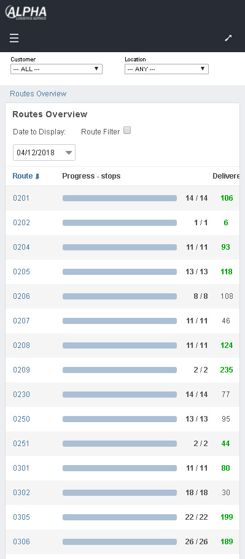
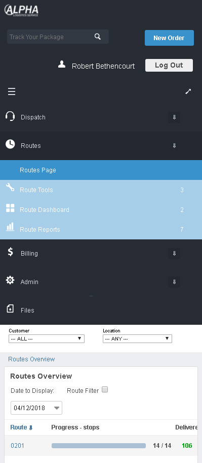
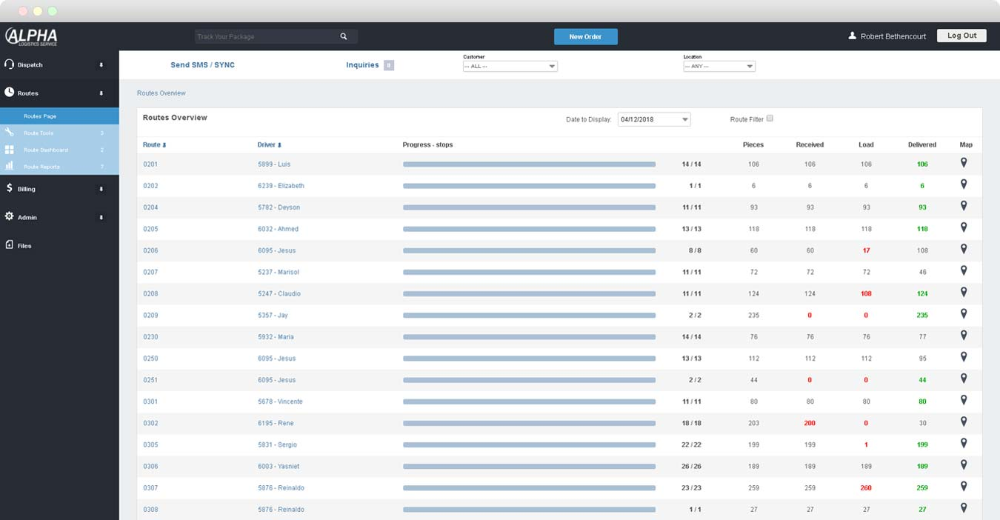
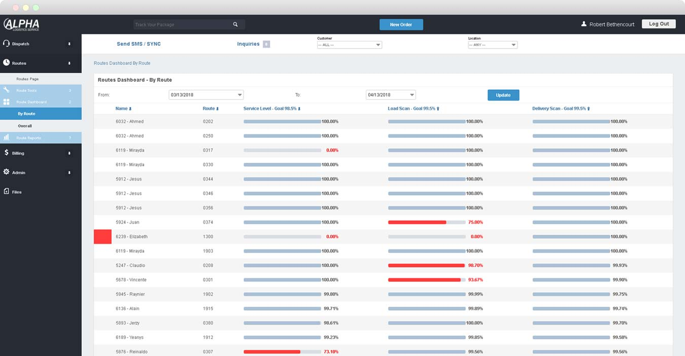
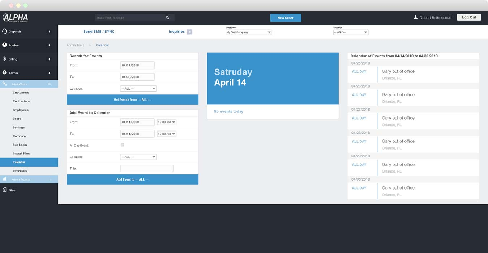

Tables No More And So Much More
The original admin section of the Alpha Logistics web application was built in the late 90s and used tables for layout. While that's not ideal, what really was problematic was that many features had been added without attempts to organize them into like sections. Links were added to drop down menus and the users just had to know where to look. Onboarding new personnel was always challenging as navigating the admin site required trial and error.
By the time I started work on the redesign, Smart Phones were being used by the staff. The ability to access data in the system while walking the warehouse became a feature that would give our management staff more granular visibility while away from their desk, but we needed to restructure the content and adopt a responsive design.
Is The Driver Late? Now We Know
The redesign of the Routes Overview page gives the dispatcher and operations staff the ability to track late deliveries and short orders at a glance for all the drivers making deliveries. They can now more quickly identify, solve problems and communicate accurate information back to customers.
 Beyond Redesign and into SPA
While most of the javaScript is a mix of vanilla and jQuery, new features are now added with the front end functional programming language elm and react library. Elm's ability to drastically reduce, or all together eliminate runtime errors means we don't revisit shipped features for bugs we didn't catch in tests. Our business logic may need to be expanded or refined, but code that mysteriously fails on our users is no longer a concern. When the project allows, elm has become our go-to for frontend development.
